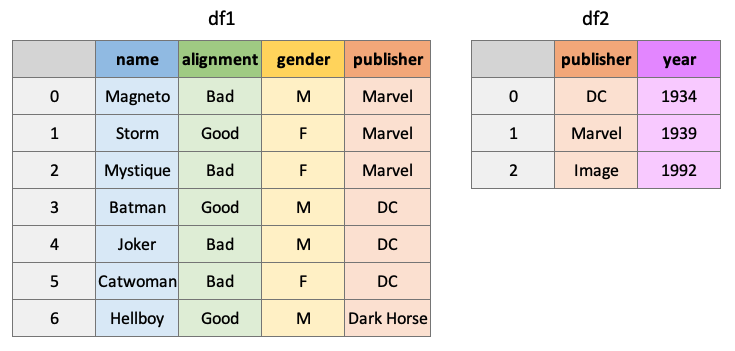

Lecture 7: Basic Data Wrangling With Pandas¶
Tomas Beuzen, September 2020
Lecture Outline
Lecture Learning Objectives¶
Inspect a dataframe with
df.head(),df.tail(),df.info(),df.describe().Obtain dataframe summaries with
df.info()anddf.describe().Manipulate how a dataframe displays in Jupyter by modifying Pandas configuration options such as
pd.set_option("display.max_rows", n).Rename columns of a dataframe using the
df.rename()function or by accessing thedf.columnsattribute.Modify the index name and index values of a dataframe using
.set_index(),.reset_index(),df.index.name,.index.Use
df.melt()anddf.pivot()to reshape dataframes, specifically to make tidy dataframes.Combine dataframes using
df.merge()andpd.concat()and know when to use these different methods.Apply functions to a dataframe
df.apply()anddf.applymap()Perform grouping and aggregating operations using
df.groupby()anddf.agg().Perform aggregating methods on grouped or ungrouped objects such as finding the minimum, maximum and sum of values in a dataframe using
df.agg().Remove or fill missing values in a dataframe with
df.dropna()anddf.fillna().
import numpy as np
import pandas as pd
1. DataFrame Characteristics¶
Last lecture we looked at how we can create dataframes
Let’s now look at some helpful ways we can view our dataframe
Head/Tail¶
The
.head()and.tail()methods allow you to view the top/bottom n (default 5) rows of a dataframeLet’s load in the cycling data set from last lecture and try them out:
df = pd.read_csv('data/cycling_data.csv')
df.head()
| Date | Name | Type | Time | Distance | Comments | |
|---|---|---|---|---|---|---|
| 0 | 10 Sep 2019, 00:13:04 | Afternoon Ride | Ride | 2084 | 12.62 | Rain |
| 1 | 10 Sep 2019, 13:52:18 | Morning Ride | Ride | 2531 | 13.03 | rain |
| 2 | 11 Sep 2019, 00:23:50 | Afternoon Ride | Ride | 1863 | 12.52 | Wet road but nice weather |
| 3 | 11 Sep 2019, 14:06:19 | Morning Ride | Ride | 2192 | 12.84 | Stopped for photo of sunrise |
| 4 | 12 Sep 2019, 00:28:05 | Afternoon Ride | Ride | 1891 | 12.48 | Tired by the end of the week |
The default return value is 5 rows, but we can pass in any number we like
For example, let’s take a look at the top 10 rows:
df.head(10)
| Date | Name | Type | Time | Distance | Comments | |
|---|---|---|---|---|---|---|
| 0 | 10 Sep 2019, 00:13:04 | Afternoon Ride | Ride | 2084 | 12.62 | Rain |
| 1 | 10 Sep 2019, 13:52:18 | Morning Ride | Ride | 2531 | 13.03 | rain |
| 2 | 11 Sep 2019, 00:23:50 | Afternoon Ride | Ride | 1863 | 12.52 | Wet road but nice weather |
| 3 | 11 Sep 2019, 14:06:19 | Morning Ride | Ride | 2192 | 12.84 | Stopped for photo of sunrise |
| 4 | 12 Sep 2019, 00:28:05 | Afternoon Ride | Ride | 1891 | 12.48 | Tired by the end of the week |
| 5 | 16 Sep 2019, 13:57:48 | Morning Ride | Ride | 2272 | 12.45 | Rested after the weekend! |
| 6 | 17 Sep 2019, 00:15:47 | Afternoon Ride | Ride | 1973 | 12.45 | Legs feeling strong! |
| 7 | 17 Sep 2019, 13:43:34 | Morning Ride | Ride | 2285 | 12.60 | Raining |
| 8 | 18 Sep 2019, 13:49:53 | Morning Ride | Ride | 2903 | 14.57 | Raining today |
| 9 | 18 Sep 2019, 00:15:52 | Afternoon Ride | Ride | 2101 | 12.48 | Pumped up tires |
Or the bottom 5 rows:
df.tail()
| Date | Name | Type | Time | Distance | Comments | |
|---|---|---|---|---|---|---|
| 28 | 4 Oct 2019, 01:08:08 | Afternoon Ride | Ride | 1870 | 12.63 | Very tired, riding into the wind |
| 29 | 9 Oct 2019, 13:55:40 | Morning Ride | Ride | 2149 | 12.70 | Really cold! But feeling good |
| 30 | 10 Oct 2019, 00:10:31 | Afternoon Ride | Ride | 1841 | 12.59 | Feeling good after a holiday break! |
| 31 | 10 Oct 2019, 13:47:14 | Morning Ride | Ride | 2463 | 12.79 | Stopped for photo of sunrise |
| 32 | 11 Oct 2019, 00:16:57 | Afternoon Ride | Ride | 1843 | 11.79 | Bike feeling tight, needs an oil and pump |
DataFrame Summaries¶
Three very helpful attributes/functions for getting high-level summaries of your dataframe are:
.shape.info().describe()
.shapeis just like the ndarray attribute we’ve seen previouslyIt gives the shape (rows, cols) of your dataframe:
df.shape
(33, 6)
.info()prints information about the dataframe itself, such as dtypes, memory usages, non-null values, etc:
df.info()
<class 'pandas.core.frame.DataFrame'>
RangeIndex: 33 entries, 0 to 32
Data columns (total 6 columns):
# Column Non-Null Count Dtype
--- ------ -------------- -----
0 Date 33 non-null object
1 Name 33 non-null object
2 Type 33 non-null object
3 Time 33 non-null int64
4 Distance 31 non-null float64
5 Comments 33 non-null object
dtypes: float64(1), int64(1), object(4)
memory usage: 1.7+ KB
.describe()provides summary statistics of the values within a dataframe:
df.describe()
| Time | Distance | |
|---|---|---|
| count | 33.000000 | 31.000000 |
| mean | 3512.787879 | 12.667419 |
| std | 8003.309233 | 0.428618 |
| min | 1712.000000 | 11.790000 |
| 25% | 1863.000000 | 12.480000 |
| 50% | 2118.000000 | 12.620000 |
| 75% | 2285.000000 | 12.750000 |
| max | 48062.000000 | 14.570000 |
By default,
.describe()only print summaries of numeric featuresWe can force it to give summaries on all features using the argument
include='all'(although they may not make sense!):
df.describe(include='all')
| Date | Name | Type | Time | Distance | Comments | |
|---|---|---|---|---|---|---|
| count | 33 | 33 | 33 | 33.000000 | 31.000000 | 33 |
| unique | 33 | 2 | 1 | NaN | NaN | 25 |
| top | 1 Oct 2019, 00:15:07 | Afternoon Ride | Ride | NaN | NaN | Feeling good |
| freq | 1 | 17 | 33 | NaN | NaN | 3 |
| mean | NaN | NaN | NaN | 3512.787879 | 12.667419 | NaN |
| std | NaN | NaN | NaN | 8003.309233 | 0.428618 | NaN |
| min | NaN | NaN | NaN | 1712.000000 | 11.790000 | NaN |
| 25% | NaN | NaN | NaN | 1863.000000 | 12.480000 | NaN |
| 50% | NaN | NaN | NaN | 2118.000000 | 12.620000 | NaN |
| 75% | NaN | NaN | NaN | 2285.000000 | 12.750000 | NaN |
| max | NaN | NaN | NaN | 48062.000000 | 14.570000 | NaN |
Displaying DataFrames¶
Displaying your dataframes effectively can be an important part of your workflow
If a dataframe has more than 60 rows, Pandas will only display the first 5 and last 5 rows:
pd.DataFrame(np.random.rand(100))
| 0 | |
|---|---|
| 0 | 0.479080 |
| 1 | 0.960817 |
| 2 | 0.173330 |
| 3 | 0.493497 |
| 4 | 0.282814 |
| ... | ... |
| 95 | 0.902599 |
| 96 | 0.147490 |
| 97 | 0.618611 |
| 98 | 0.649477 |
| 99 | 0.844713 |
100 rows × 1 columns
For dataframes of less than 60 rows, Pandas will print the whole dataframe
df
| Date | Name | Type | Time | Distance | Comments | |
|---|---|---|---|---|---|---|
| 0 | 10 Sep 2019, 00:13:04 | Afternoon Ride | Ride | 2084 | 12.62 | Rain |
| 1 | 10 Sep 2019, 13:52:18 | Morning Ride | Ride | 2531 | 13.03 | rain |
| 2 | 11 Sep 2019, 00:23:50 | Afternoon Ride | Ride | 1863 | 12.52 | Wet road but nice weather |
| 3 | 11 Sep 2019, 14:06:19 | Morning Ride | Ride | 2192 | 12.84 | Stopped for photo of sunrise |
| 4 | 12 Sep 2019, 00:28:05 | Afternoon Ride | Ride | 1891 | 12.48 | Tired by the end of the week |
| 5 | 16 Sep 2019, 13:57:48 | Morning Ride | Ride | 2272 | 12.45 | Rested after the weekend! |
| 6 | 17 Sep 2019, 00:15:47 | Afternoon Ride | Ride | 1973 | 12.45 | Legs feeling strong! |
| 7 | 17 Sep 2019, 13:43:34 | Morning Ride | Ride | 2285 | 12.60 | Raining |
| 8 | 18 Sep 2019, 13:49:53 | Morning Ride | Ride | 2903 | 14.57 | Raining today |
| 9 | 18 Sep 2019, 00:15:52 | Afternoon Ride | Ride | 2101 | 12.48 | Pumped up tires |
| 10 | 19 Sep 2019, 00:30:01 | Afternoon Ride | Ride | 48062 | 12.48 | Feeling good |
| 11 | 19 Sep 2019, 13:52:09 | Morning Ride | Ride | 2090 | 12.59 | Getting colder which is nice |
| 12 | 20 Sep 2019, 01:02:05 | Afternoon Ride | Ride | 2961 | 12.81 | Feeling good |
| 13 | 23 Sep 2019, 13:50:41 | Morning Ride | Ride | 2462 | 12.68 | Rested after the weekend! |
| 14 | 24 Sep 2019, 00:35:42 | Afternoon Ride | Ride | 2076 | 12.47 | Oiled chain, bike feels smooth |
| 15 | 24 Sep 2019, 13:41:24 | Morning Ride | Ride | 2321 | 12.68 | Bike feeling much smoother |
| 16 | 25 Sep 2019, 00:07:21 | Afternoon Ride | Ride | 1775 | 12.10 | Feeling really tired |
| 17 | 25 Sep 2019, 13:35:41 | Morning Ride | Ride | 2124 | 12.65 | Stopped for photo of sunrise |
| 18 | 26 Sep 2019, 00:13:33 | Afternoon Ride | Ride | 1860 | 12.52 | raining |
| 19 | 26 Sep 2019, 13:42:43 | Morning Ride | Ride | 2350 | 12.91 | Detour around trucks at Jericho |
| 20 | 27 Sep 2019, 01:00:18 | Afternoon Ride | Ride | 1712 | 12.47 | Tired by the end of the week |
| 21 | 30 Sep 2019, 13:53:52 | Morning Ride | Ride | 2118 | 12.71 | Rested after the weekend! |
| 22 | 1 Oct 2019, 00:15:07 | Afternoon Ride | Ride | 1732 | NaN | Legs feeling strong! |
| 23 | 1 Oct 2019, 13:45:55 | Morning Ride | Ride | 2222 | 12.82 | Beautiful morning! Feeling fit |
| 24 | 2 Oct 2019, 00:13:09 | Afternoon Ride | Ride | 1756 | NaN | A little tired today but good weather |
| 25 | 2 Oct 2019, 13:46:06 | Morning Ride | Ride | 2134 | 13.06 | Bit tired today but good weather |
| 26 | 3 Oct 2019, 00:45:22 | Afternoon Ride | Ride | 1724 | 12.52 | Feeling good |
| 27 | 3 Oct 2019, 13:47:36 | Morning Ride | Ride | 2182 | 12.68 | Wet road |
| 28 | 4 Oct 2019, 01:08:08 | Afternoon Ride | Ride | 1870 | 12.63 | Very tired, riding into the wind |
| 29 | 9 Oct 2019, 13:55:40 | Morning Ride | Ride | 2149 | 12.70 | Really cold! But feeling good |
| 30 | 10 Oct 2019, 00:10:31 | Afternoon Ride | Ride | 1841 | 12.59 | Feeling good after a holiday break! |
| 31 | 10 Oct 2019, 13:47:14 | Morning Ride | Ride | 2463 | 12.79 | Stopped for photo of sunrise |
| 32 | 11 Oct 2019, 00:16:57 | Afternoon Ride | Ride | 1843 | 11.79 | Bike feeling tight, needs an oil and pump |
I find the 60 row threshold to be a little too much, I prefer something more like 20
You can change the setting using
pd.set_option("display.max_rows", 20)so that anything with more than 20 rows will be summarised by the first and last 5 rows as before:
pd.set_option("display.max_rows", 20)
df
| Date | Name | Type | Time | Distance | Comments | |
|---|---|---|---|---|---|---|
| 0 | 10 Sep 2019, 00:13:04 | Afternoon Ride | Ride | 2084 | 12.62 | Rain |
| 1 | 10 Sep 2019, 13:52:18 | Morning Ride | Ride | 2531 | 13.03 | rain |
| 2 | 11 Sep 2019, 00:23:50 | Afternoon Ride | Ride | 1863 | 12.52 | Wet road but nice weather |
| 3 | 11 Sep 2019, 14:06:19 | Morning Ride | Ride | 2192 | 12.84 | Stopped for photo of sunrise |
| 4 | 12 Sep 2019, 00:28:05 | Afternoon Ride | Ride | 1891 | 12.48 | Tired by the end of the week |
| ... | ... | ... | ... | ... | ... | ... |
| 28 | 4 Oct 2019, 01:08:08 | Afternoon Ride | Ride | 1870 | 12.63 | Very tired, riding into the wind |
| 29 | 9 Oct 2019, 13:55:40 | Morning Ride | Ride | 2149 | 12.70 | Really cold! But feeling good |
| 30 | 10 Oct 2019, 00:10:31 | Afternoon Ride | Ride | 1841 | 12.59 | Feeling good after a holiday break! |
| 31 | 10 Oct 2019, 13:47:14 | Morning Ride | Ride | 2463 | 12.79 | Stopped for photo of sunrise |
| 32 | 11 Oct 2019, 00:16:57 | Afternoon Ride | Ride | 1843 | 11.79 | Bike feeling tight, needs an oil and pump |
33 rows × 6 columns
There are also other display options you can change, such as how many columns are shown, how numbers are formatted, etc.
See the official documentation for more
Another display option I will point out is that Pandas allows you to style your tables, for example by highlighting negative values, or adding conditional colour maps to your dataframe
Below I’ll style values based on their value ranging from negative (purple) to postive (yellow) but you can see the styling documentation for more examples
test = pd.DataFrame(np.random.randn(5, 5),
index = [f"row_{_}" for _ in range(5)],
columns = [f"feature_{_}" for _ in range(5)])
test.style.background_gradient(cmap='plasma')
| feature_0 | feature_1 | feature_2 | feature_3 | feature_4 | |
|---|---|---|---|---|---|
| row_0 | -1.133989 | -0.617645 | -0.905044 | 0.048443 | 0.417325 |
| row_1 | -0.209779 | 0.086924 | -0.651659 | 0.370691 | -0.057885 |
| row_2 | 0.721428 | -0.297673 | 1.215956 | 0.107655 | -0.658408 |
| row_3 | 0.272190 | 1.711102 | -0.023139 | 0.372863 | -0.918511 |
| row_4 | -0.515310 | -0.790757 | -0.515313 | -0.666606 | -1.450039 |
Views vs Copies¶
In previous lectures we’ve discussed views (“looking” at a part of an existing object) and copies (making a new copy of the object in memory)
These things get a little abstract with Pandas and “…it’s very hard to predict whether it will return a view or a copy” (that’s a quote straight from a dedicated section in the Pandas documentation)
Basically, it depends on the operation you are trying to perform, your dataframe’s structure and the memory layout of the underlying array
But don’t worry, let me tell you all you need to know
Firstly, the most common warning you’ll encounter in Pandas is the
SettingWithCopy, Pandas raises it as a warning that you might not be doing what you think you’re doingLet’s see an example. You may recall there is one outlier
Timein our dataframe:
df[df['Time'] > 4000]
| Date | Name | Type | Time | Distance | Comments | |
|---|---|---|---|---|---|---|
| 10 | 19 Sep 2019, 00:30:01 | Afternoon Ride | Ride | 48062 | 12.48 | Feeling good |
Imagine we wanted to change this to
2000You’d probably do the following:
df[df['Time'] > 4000]['Time'] = 2000
/opt/miniconda3/envs/mds511/lib/python3.7/site-packages/ipykernel_launcher.py:1: SettingWithCopyWarning:
A value is trying to be set on a copy of a slice from a DataFrame.
Try using .loc[row_indexer,col_indexer] = value instead
See the caveats in the documentation: https://pandas.pydata.org/pandas-docs/stable/user_guide/indexing.html#returning-a-view-versus-a-copy
"""Entry point for launching an IPython kernel.
Ah, there’s that warning
Did our dataframe get changed?
df[df['Time'] > 4000]
| Date | Name | Type | Time | Distance | Comments | |
|---|---|---|---|---|---|---|
| 10 | 19 Sep 2019, 00:30:01 | Afternoon Ride | Ride | 48062 | 12.48 | Feeling good |
No it didn’t, even though you probably thought it did
What happened above is that
df[df['Time'] > 4000]was executed first and returned a copy of the dataframe, we can confirm by usingid():
print(f"The id of the original dataframe is: {id(df)}")
print(f" The id of the indexed dataframe is: {id(df[df['Time'] > 4000])}")
The id of the original dataframe is: 4531610320
The id of the indexed dataframe is: 5915539088
We then tried to set a value on this new object by appending
['Time'] = 2000Pandas is warning us that we are doing that operation on a copy of the original dataframe, which is probably not what we want
To fix this, you need to index in a single go, using
.loc[]for example:
df.loc[df['Time'] > 4000, 'Time'] = 2000
No error this time! And let’s confirm the change:
df[df['Time'] > 4000]
| Date | Name | Type | Time | Distance | Comments |
|---|
The second thing you need to know is that if you’re ever in doubt about whether something is a view or a copy, you can just use the
.copy()method to force a copy of a dataframeJust like this:
df2 = df[df['Time'] > 4000].copy()
That way, your guaranteed a copy that you can modify as you wish
2. Basic DataFrame Manipulations¶
Renaming Columns¶
We can rename columns two ways:
Using
.rename()(to selectively change column names)By setting the
.columnsattribute (to change all column names at once)
df
| Date | Name | Type | Time | Distance | Comments | |
|---|---|---|---|---|---|---|
| 0 | 10 Sep 2019, 00:13:04 | Afternoon Ride | Ride | 2084 | 12.62 | Rain |
| 1 | 10 Sep 2019, 13:52:18 | Morning Ride | Ride | 2531 | 13.03 | rain |
| 2 | 11 Sep 2019, 00:23:50 | Afternoon Ride | Ride | 1863 | 12.52 | Wet road but nice weather |
| 3 | 11 Sep 2019, 14:06:19 | Morning Ride | Ride | 2192 | 12.84 | Stopped for photo of sunrise |
| 4 | 12 Sep 2019, 00:28:05 | Afternoon Ride | Ride | 1891 | 12.48 | Tired by the end of the week |
| ... | ... | ... | ... | ... | ... | ... |
| 28 | 4 Oct 2019, 01:08:08 | Afternoon Ride | Ride | 1870 | 12.63 | Very tired, riding into the wind |
| 29 | 9 Oct 2019, 13:55:40 | Morning Ride | Ride | 2149 | 12.70 | Really cold! But feeling good |
| 30 | 10 Oct 2019, 00:10:31 | Afternoon Ride | Ride | 1841 | 12.59 | Feeling good after a holiday break! |
| 31 | 10 Oct 2019, 13:47:14 | Morning Ride | Ride | 2463 | 12.79 | Stopped for photo of sunrise |
| 32 | 11 Oct 2019, 00:16:57 | Afternoon Ride | Ride | 1843 | 11.79 | Bike feeling tight, needs an oil and pump |
33 rows × 6 columns
Let’s give it a go:
df.rename(columns={"Date": "Datetime",
"Comments": "Notes"})
df
| Date | Name | Type | Time | Distance | Comments | |
|---|---|---|---|---|---|---|
| 0 | 10 Sep 2019, 00:13:04 | Afternoon Ride | Ride | 2084 | 12.62 | Rain |
| 1 | 10 Sep 2019, 13:52:18 | Morning Ride | Ride | 2531 | 13.03 | rain |
| 2 | 11 Sep 2019, 00:23:50 | Afternoon Ride | Ride | 1863 | 12.52 | Wet road but nice weather |
| 3 | 11 Sep 2019, 14:06:19 | Morning Ride | Ride | 2192 | 12.84 | Stopped for photo of sunrise |
| 4 | 12 Sep 2019, 00:28:05 | Afternoon Ride | Ride | 1891 | 12.48 | Tired by the end of the week |
| ... | ... | ... | ... | ... | ... | ... |
| 28 | 4 Oct 2019, 01:08:08 | Afternoon Ride | Ride | 1870 | 12.63 | Very tired, riding into the wind |
| 29 | 9 Oct 2019, 13:55:40 | Morning Ride | Ride | 2149 | 12.70 | Really cold! But feeling good |
| 30 | 10 Oct 2019, 00:10:31 | Afternoon Ride | Ride | 1841 | 12.59 | Feeling good after a holiday break! |
| 31 | 10 Oct 2019, 13:47:14 | Morning Ride | Ride | 2463 | 12.79 | Stopped for photo of sunrise |
| 32 | 11 Oct 2019, 00:16:57 | Afternoon Ride | Ride | 1843 | 11.79 | Bike feeling tight, needs an oil and pump |
33 rows × 6 columns
Wait? What happened? Nothing changed?
In the code above we did actually rename columns of our dataframe but we didn’t modify the dataframe inplace, we made a copy of it (more on that later)
There are generally two options for making permanent dataframe changes:
Use the argument
inplace=True, e.g.,df.rename(..., inplace=True), available in most functions/methods
Re-assign, e.g.,
df = df.rename(...)
The Pandas team recommends Method 2 (re-assign), for a few reasons (mostly to do with how memory is allocated under the hood)
df = df.rename(columns={"Date": "Datetime",
"Comments": "Notes"})
df
| Datetime | Name | Type | Time | Distance | Notes | |
|---|---|---|---|---|---|---|
| 0 | 10 Sep 2019, 00:13:04 | Afternoon Ride | Ride | 2084 | 12.62 | Rain |
| 1 | 10 Sep 2019, 13:52:18 | Morning Ride | Ride | 2531 | 13.03 | rain |
| 2 | 11 Sep 2019, 00:23:50 | Afternoon Ride | Ride | 1863 | 12.52 | Wet road but nice weather |
| 3 | 11 Sep 2019, 14:06:19 | Morning Ride | Ride | 2192 | 12.84 | Stopped for photo of sunrise |
| 4 | 12 Sep 2019, 00:28:05 | Afternoon Ride | Ride | 1891 | 12.48 | Tired by the end of the week |
| ... | ... | ... | ... | ... | ... | ... |
| 28 | 4 Oct 2019, 01:08:08 | Afternoon Ride | Ride | 1870 | 12.63 | Very tired, riding into the wind |
| 29 | 9 Oct 2019, 13:55:40 | Morning Ride | Ride | 2149 | 12.70 | Really cold! But feeling good |
| 30 | 10 Oct 2019, 00:10:31 | Afternoon Ride | Ride | 1841 | 12.59 | Feeling good after a holiday break! |
| 31 | 10 Oct 2019, 13:47:14 | Morning Ride | Ride | 2463 | 12.79 | Stopped for photo of sunrise |
| 32 | 11 Oct 2019, 00:16:57 | Afternoon Ride | Ride | 1843 | 11.79 | Bike feeling tight, needs an oil and pump |
33 rows × 6 columns
If you wish to change all of the columns of a dataframe, you can do so by setting the
.columnsattribute
df.columns = [f"Column {_}" for _ in range(1, 7)]
df
| Column 1 | Column 2 | Column 3 | Column 4 | Column 5 | Column 6 | |
|---|---|---|---|---|---|---|
| 0 | 10 Sep 2019, 00:13:04 | Afternoon Ride | Ride | 2084 | 12.62 | Rain |
| 1 | 10 Sep 2019, 13:52:18 | Morning Ride | Ride | 2531 | 13.03 | rain |
| 2 | 11 Sep 2019, 00:23:50 | Afternoon Ride | Ride | 1863 | 12.52 | Wet road but nice weather |
| 3 | 11 Sep 2019, 14:06:19 | Morning Ride | Ride | 2192 | 12.84 | Stopped for photo of sunrise |
| 4 | 12 Sep 2019, 00:28:05 | Afternoon Ride | Ride | 1891 | 12.48 | Tired by the end of the week |
| ... | ... | ... | ... | ... | ... | ... |
| 28 | 4 Oct 2019, 01:08:08 | Afternoon Ride | Ride | 1870 | 12.63 | Very tired, riding into the wind |
| 29 | 9 Oct 2019, 13:55:40 | Morning Ride | Ride | 2149 | 12.70 | Really cold! But feeling good |
| 30 | 10 Oct 2019, 00:10:31 | Afternoon Ride | Ride | 1841 | 12.59 | Feeling good after a holiday break! |
| 31 | 10 Oct 2019, 13:47:14 | Morning Ride | Ride | 2463 | 12.79 | Stopped for photo of sunrise |
| 32 | 11 Oct 2019, 00:16:57 | Afternoon Ride | Ride | 1843 | 11.79 | Bike feeling tight, needs an oil and pump |
33 rows × 6 columns
Changing the Index¶
You can change the index labels of a dataframe in 3 main ways:
.set_index()to make one of the columns of the dataframe the indexDirectly modify
df.index.nameto change the index name.reset_index()to move the current index as a column and to reset the index with integer labels starting from 0Directly modify the
.index()attribute
df
| Column 1 | Column 2 | Column 3 | Column 4 | Column 5 | Column 6 | |
|---|---|---|---|---|---|---|
| 0 | 10 Sep 2019, 00:13:04 | Afternoon Ride | Ride | 2084 | 12.62 | Rain |
| 1 | 10 Sep 2019, 13:52:18 | Morning Ride | Ride | 2531 | 13.03 | rain |
| 2 | 11 Sep 2019, 00:23:50 | Afternoon Ride | Ride | 1863 | 12.52 | Wet road but nice weather |
| 3 | 11 Sep 2019, 14:06:19 | Morning Ride | Ride | 2192 | 12.84 | Stopped for photo of sunrise |
| 4 | 12 Sep 2019, 00:28:05 | Afternoon Ride | Ride | 1891 | 12.48 | Tired by the end of the week |
| ... | ... | ... | ... | ... | ... | ... |
| 28 | 4 Oct 2019, 01:08:08 | Afternoon Ride | Ride | 1870 | 12.63 | Very tired, riding into the wind |
| 29 | 9 Oct 2019, 13:55:40 | Morning Ride | Ride | 2149 | 12.70 | Really cold! But feeling good |
| 30 | 10 Oct 2019, 00:10:31 | Afternoon Ride | Ride | 1841 | 12.59 | Feeling good after a holiday break! |
| 31 | 10 Oct 2019, 13:47:14 | Morning Ride | Ride | 2463 | 12.79 | Stopped for photo of sunrise |
| 32 | 11 Oct 2019, 00:16:57 | Afternoon Ride | Ride | 1843 | 11.79 | Bike feeling tight, needs an oil and pump |
33 rows × 6 columns
Below I will set the index as
Column 1and rename the index to “New Index”
df = df.set_index("Column 1")
df.index.name = "New Index"
df
| Column 2 | Column 3 | Column 4 | Column 5 | Column 6 | |
|---|---|---|---|---|---|
| New Index | |||||
| 10 Sep 2019, 00:13:04 | Afternoon Ride | Ride | 2084 | 12.62 | Rain |
| 10 Sep 2019, 13:52:18 | Morning Ride | Ride | 2531 | 13.03 | rain |
| 11 Sep 2019, 00:23:50 | Afternoon Ride | Ride | 1863 | 12.52 | Wet road but nice weather |
| 11 Sep 2019, 14:06:19 | Morning Ride | Ride | 2192 | 12.84 | Stopped for photo of sunrise |
| 12 Sep 2019, 00:28:05 | Afternoon Ride | Ride | 1891 | 12.48 | Tired by the end of the week |
| ... | ... | ... | ... | ... | ... |
| 4 Oct 2019, 01:08:08 | Afternoon Ride | Ride | 1870 | 12.63 | Very tired, riding into the wind |
| 9 Oct 2019, 13:55:40 | Morning Ride | Ride | 2149 | 12.70 | Really cold! But feeling good |
| 10 Oct 2019, 00:10:31 | Afternoon Ride | Ride | 1841 | 12.59 | Feeling good after a holiday break! |
| 10 Oct 2019, 13:47:14 | Morning Ride | Ride | 2463 | 12.79 | Stopped for photo of sunrise |
| 11 Oct 2019, 00:16:57 | Afternoon Ride | Ride | 1843 | 11.79 | Bike feeling tight, needs an oil and pump |
33 rows × 5 columns
I can send the index back to a column and have a default integer index using
.reset_index()
df = df.reset_index()
df
| New Index | Column 2 | Column 3 | Column 4 | Column 5 | Column 6 | |
|---|---|---|---|---|---|---|
| 0 | 10 Sep 2019, 00:13:04 | Afternoon Ride | Ride | 2084 | 12.62 | Rain |
| 1 | 10 Sep 2019, 13:52:18 | Morning Ride | Ride | 2531 | 13.03 | rain |
| 2 | 11 Sep 2019, 00:23:50 | Afternoon Ride | Ride | 1863 | 12.52 | Wet road but nice weather |
| 3 | 11 Sep 2019, 14:06:19 | Morning Ride | Ride | 2192 | 12.84 | Stopped for photo of sunrise |
| 4 | 12 Sep 2019, 00:28:05 | Afternoon Ride | Ride | 1891 | 12.48 | Tired by the end of the week |
| ... | ... | ... | ... | ... | ... | ... |
| 28 | 4 Oct 2019, 01:08:08 | Afternoon Ride | Ride | 1870 | 12.63 | Very tired, riding into the wind |
| 29 | 9 Oct 2019, 13:55:40 | Morning Ride | Ride | 2149 | 12.70 | Really cold! But feeling good |
| 30 | 10 Oct 2019, 00:10:31 | Afternoon Ride | Ride | 1841 | 12.59 | Feeling good after a holiday break! |
| 31 | 10 Oct 2019, 13:47:14 | Morning Ride | Ride | 2463 | 12.79 | Stopped for photo of sunrise |
| 32 | 11 Oct 2019, 00:16:57 | Afternoon Ride | Ride | 1843 | 11.79 | Bike feeling tight, needs an oil and pump |
33 rows × 6 columns
Like with column names, we can also modify the index directly, but I can’t remember ever doing this, usually I’ll use
.set_index()
df.index
RangeIndex(start=0, stop=33, step=1)
df.index = range(100, 133, 1)
df
| New Index | Column 2 | Column 3 | Column 4 | Column 5 | Column 6 | |
|---|---|---|---|---|---|---|
| 100 | 10 Sep 2019, 00:13:04 | Afternoon Ride | Ride | 2084 | 12.62 | Rain |
| 101 | 10 Sep 2019, 13:52:18 | Morning Ride | Ride | 2531 | 13.03 | rain |
| 102 | 11 Sep 2019, 00:23:50 | Afternoon Ride | Ride | 1863 | 12.52 | Wet road but nice weather |
| 103 | 11 Sep 2019, 14:06:19 | Morning Ride | Ride | 2192 | 12.84 | Stopped for photo of sunrise |
| 104 | 12 Sep 2019, 00:28:05 | Afternoon Ride | Ride | 1891 | 12.48 | Tired by the end of the week |
| ... | ... | ... | ... | ... | ... | ... |
| 128 | 4 Oct 2019, 01:08:08 | Afternoon Ride | Ride | 1870 | 12.63 | Very tired, riding into the wind |
| 129 | 9 Oct 2019, 13:55:40 | Morning Ride | Ride | 2149 | 12.70 | Really cold! But feeling good |
| 130 | 10 Oct 2019, 00:10:31 | Afternoon Ride | Ride | 1841 | 12.59 | Feeling good after a holiday break! |
| 131 | 10 Oct 2019, 13:47:14 | Morning Ride | Ride | 2463 | 12.79 | Stopped for photo of sunrise |
| 132 | 11 Oct 2019, 00:16:57 | Afternoon Ride | Ride | 1843 | 11.79 | Bike feeling tight, needs an oil and pump |
33 rows × 6 columns
Adding/Removing Columns¶
There are two main ways to add/remove columns of a dataframe
Use
[]to add columnsUse
.drop()to drop columns
Let’s re-read in a fresh copy of the cycling dataset
df = pd.read_csv('data/cycling_data.csv')
df
| Date | Name | Type | Time | Distance | Comments | |
|---|---|---|---|---|---|---|
| 0 | 10 Sep 2019, 00:13:04 | Afternoon Ride | Ride | 2084 | 12.62 | Rain |
| 1 | 10 Sep 2019, 13:52:18 | Morning Ride | Ride | 2531 | 13.03 | rain |
| 2 | 11 Sep 2019, 00:23:50 | Afternoon Ride | Ride | 1863 | 12.52 | Wet road but nice weather |
| 3 | 11 Sep 2019, 14:06:19 | Morning Ride | Ride | 2192 | 12.84 | Stopped for photo of sunrise |
| 4 | 12 Sep 2019, 00:28:05 | Afternoon Ride | Ride | 1891 | 12.48 | Tired by the end of the week |
| ... | ... | ... | ... | ... | ... | ... |
| 28 | 4 Oct 2019, 01:08:08 | Afternoon Ride | Ride | 1870 | 12.63 | Very tired, riding into the wind |
| 29 | 9 Oct 2019, 13:55:40 | Morning Ride | Ride | 2149 | 12.70 | Really cold! But feeling good |
| 30 | 10 Oct 2019, 00:10:31 | Afternoon Ride | Ride | 1841 | 12.59 | Feeling good after a holiday break! |
| 31 | 10 Oct 2019, 13:47:14 | Morning Ride | Ride | 2463 | 12.79 | Stopped for photo of sunrise |
| 32 | 11 Oct 2019, 00:16:57 | Afternoon Ride | Ride | 1843 | 11.79 | Bike feeling tight, needs an oil and pump |
33 rows × 6 columns
We can add a new column to a dataframe by simply using
[]with a new column name and value(s)
df['Rider'] = 'Tom Beuzen'
df['Avg Speed'] = df['Distance'] * 1000 / df['Time'] # avg. speed in m/s
df
| Date | Name | Type | Time | Distance | Comments | Rider | Avg Speed | |
|---|---|---|---|---|---|---|---|---|
| 0 | 10 Sep 2019, 00:13:04 | Afternoon Ride | Ride | 2084 | 12.62 | Rain | Tom Beuzen | 6.055662 |
| 1 | 10 Sep 2019, 13:52:18 | Morning Ride | Ride | 2531 | 13.03 | rain | Tom Beuzen | 5.148163 |
| 2 | 11 Sep 2019, 00:23:50 | Afternoon Ride | Ride | 1863 | 12.52 | Wet road but nice weather | Tom Beuzen | 6.720344 |
| 3 | 11 Sep 2019, 14:06:19 | Morning Ride | Ride | 2192 | 12.84 | Stopped for photo of sunrise | Tom Beuzen | 5.857664 |
| 4 | 12 Sep 2019, 00:28:05 | Afternoon Ride | Ride | 1891 | 12.48 | Tired by the end of the week | Tom Beuzen | 6.599683 |
| ... | ... | ... | ... | ... | ... | ... | ... | ... |
| 28 | 4 Oct 2019, 01:08:08 | Afternoon Ride | Ride | 1870 | 12.63 | Very tired, riding into the wind | Tom Beuzen | 6.754011 |
| 29 | 9 Oct 2019, 13:55:40 | Morning Ride | Ride | 2149 | 12.70 | Really cold! But feeling good | Tom Beuzen | 5.909725 |
| 30 | 10 Oct 2019, 00:10:31 | Afternoon Ride | Ride | 1841 | 12.59 | Feeling good after a holiday break! | Tom Beuzen | 6.838675 |
| 31 | 10 Oct 2019, 13:47:14 | Morning Ride | Ride | 2463 | 12.79 | Stopped for photo of sunrise | Tom Beuzen | 5.192854 |
| 32 | 11 Oct 2019, 00:16:57 | Afternoon Ride | Ride | 1843 | 11.79 | Bike feeling tight, needs an oil and pump | Tom Beuzen | 6.397179 |
33 rows × 8 columns
df = df.drop(columns=['Rider', 'Avg Speed'])
df
| Date | Name | Type | Time | Distance | Comments | |
|---|---|---|---|---|---|---|
| 0 | 10 Sep 2019, 00:13:04 | Afternoon Ride | Ride | 2084 | 12.62 | Rain |
| 1 | 10 Sep 2019, 13:52:18 | Morning Ride | Ride | 2531 | 13.03 | rain |
| 2 | 11 Sep 2019, 00:23:50 | Afternoon Ride | Ride | 1863 | 12.52 | Wet road but nice weather |
| 3 | 11 Sep 2019, 14:06:19 | Morning Ride | Ride | 2192 | 12.84 | Stopped for photo of sunrise |
| 4 | 12 Sep 2019, 00:28:05 | Afternoon Ride | Ride | 1891 | 12.48 | Tired by the end of the week |
| ... | ... | ... | ... | ... | ... | ... |
| 28 | 4 Oct 2019, 01:08:08 | Afternoon Ride | Ride | 1870 | 12.63 | Very tired, riding into the wind |
| 29 | 9 Oct 2019, 13:55:40 | Morning Ride | Ride | 2149 | 12.70 | Really cold! But feeling good |
| 30 | 10 Oct 2019, 00:10:31 | Afternoon Ride | Ride | 1841 | 12.59 | Feeling good after a holiday break! |
| 31 | 10 Oct 2019, 13:47:14 | Morning Ride | Ride | 2463 | 12.79 | Stopped for photo of sunrise |
| 32 | 11 Oct 2019, 00:16:57 | Afternoon Ride | Ride | 1843 | 11.79 | Bike feeling tight, needs an oil and pump |
33 rows × 6 columns
Adding/Removing Rows¶
You won’t often be adding rows to a dataframe manually (you’ll usually add rows through concatenating/joining - that’s coming up next)
You can add/remove rows of a dataframe in two ways:
Use
.append()to add rowsUse
.drop()to drop rows
df
| Date | Name | Type | Time | Distance | Comments | |
|---|---|---|---|---|---|---|
| 0 | 10 Sep 2019, 00:13:04 | Afternoon Ride | Ride | 2084 | 12.62 | Rain |
| 1 | 10 Sep 2019, 13:52:18 | Morning Ride | Ride | 2531 | 13.03 | rain |
| 2 | 11 Sep 2019, 00:23:50 | Afternoon Ride | Ride | 1863 | 12.52 | Wet road but nice weather |
| 3 | 11 Sep 2019, 14:06:19 | Morning Ride | Ride | 2192 | 12.84 | Stopped for photo of sunrise |
| 4 | 12 Sep 2019, 00:28:05 | Afternoon Ride | Ride | 1891 | 12.48 | Tired by the end of the week |
| ... | ... | ... | ... | ... | ... | ... |
| 28 | 4 Oct 2019, 01:08:08 | Afternoon Ride | Ride | 1870 | 12.63 | Very tired, riding into the wind |
| 29 | 9 Oct 2019, 13:55:40 | Morning Ride | Ride | 2149 | 12.70 | Really cold! But feeling good |
| 30 | 10 Oct 2019, 00:10:31 | Afternoon Ride | Ride | 1841 | 12.59 | Feeling good after a holiday break! |
| 31 | 10 Oct 2019, 13:47:14 | Morning Ride | Ride | 2463 | 12.79 | Stopped for photo of sunrise |
| 32 | 11 Oct 2019, 00:16:57 | Afternoon Ride | Ride | 1843 | 11.79 | Bike feeling tight, needs an oil and pump |
33 rows × 6 columns
Let’s add a new row to the bottom of this dataframe
another_row = pd.DataFrame([["12 Oct 2019, 00:10:57", "Morning Ride", "Ride",
2331, 12.67, "Washed and oiled bike last night"]],
columns = df.columns,
index = [33])
df = df.append(another_row)
df
| Date | Name | Type | Time | Distance | Comments | |
|---|---|---|---|---|---|---|
| 0 | 10 Sep 2019, 00:13:04 | Afternoon Ride | Ride | 2084 | 12.62 | Rain |
| 1 | 10 Sep 2019, 13:52:18 | Morning Ride | Ride | 2531 | 13.03 | rain |
| 2 | 11 Sep 2019, 00:23:50 | Afternoon Ride | Ride | 1863 | 12.52 | Wet road but nice weather |
| 3 | 11 Sep 2019, 14:06:19 | Morning Ride | Ride | 2192 | 12.84 | Stopped for photo of sunrise |
| 4 | 12 Sep 2019, 00:28:05 | Afternoon Ride | Ride | 1891 | 12.48 | Tired by the end of the week |
| ... | ... | ... | ... | ... | ... | ... |
| 29 | 9 Oct 2019, 13:55:40 | Morning Ride | Ride | 2149 | 12.70 | Really cold! But feeling good |
| 30 | 10 Oct 2019, 00:10:31 | Afternoon Ride | Ride | 1841 | 12.59 | Feeling good after a holiday break! |
| 31 | 10 Oct 2019, 13:47:14 | Morning Ride | Ride | 2463 | 12.79 | Stopped for photo of sunrise |
| 32 | 11 Oct 2019, 00:16:57 | Afternoon Ride | Ride | 1843 | 11.79 | Bike feeling tight, needs an oil and pump |
| 33 | 12 Oct 2019, 00:10:57 | Morning Ride | Ride | 2331 | 12.67 | Washed and oiled bike last night |
34 rows × 6 columns
We can drop all rows above index 30 using
.drop()
df.drop(index=range(30, 34))
| Date | Name | Type | Time | Distance | Comments | |
|---|---|---|---|---|---|---|
| 0 | 10 Sep 2019, 00:13:04 | Afternoon Ride | Ride | 2084 | 12.62 | Rain |
| 1 | 10 Sep 2019, 13:52:18 | Morning Ride | Ride | 2531 | 13.03 | rain |
| 2 | 11 Sep 2019, 00:23:50 | Afternoon Ride | Ride | 1863 | 12.52 | Wet road but nice weather |
| 3 | 11 Sep 2019, 14:06:19 | Morning Ride | Ride | 2192 | 12.84 | Stopped for photo of sunrise |
| 4 | 12 Sep 2019, 00:28:05 | Afternoon Ride | Ride | 1891 | 12.48 | Tired by the end of the week |
| ... | ... | ... | ... | ... | ... | ... |
| 25 | 2 Oct 2019, 13:46:06 | Morning Ride | Ride | 2134 | 13.06 | Bit tired today but good weather |
| 26 | 3 Oct 2019, 00:45:22 | Afternoon Ride | Ride | 1724 | 12.52 | Feeling good |
| 27 | 3 Oct 2019, 13:47:36 | Morning Ride | Ride | 2182 | 12.68 | Wet road |
| 28 | 4 Oct 2019, 01:08:08 | Afternoon Ride | Ride | 1870 | 12.63 | Very tired, riding into the wind |
| 29 | 9 Oct 2019, 13:55:40 | Morning Ride | Ride | 2149 | 12.70 | Really cold! But feeling good |
30 rows × 6 columns
3. DataFrame Reshaping¶
Tidy Data¶
Tidy data is about “linking the structure of a dataset with its semantics (its meaning)”
You’ve already looked at tidy data in 523
It is defined by:
Each variable forms a column
Each observation forms a row
Each type of observational unit forms a table
Often you’ll need to reshape a dataframe to make it tidy (or for some other purpose)
Source: r4ds
Melt and Pivot¶
Pandas
.melt(),.pivot()and.pivot_table()can help reshape dataframes.melt(): make wide data long (likemelt()in R).pivot(): make long data width (likecast()in R).pivot_table(): same as.pivot()but can handle multiple indexes

Source: Garrick Aden-Buie’s GitHub
The below data shows how many courses different instructors taught across different years
If the question you want to answer is something like: “Does the number of courses taught vary depending on year?” then the below would probably not be considered tidy because there are multiple observations of courses taught in a year per row (i.e., there is data for 2018, 2019 and 2020 in a single row):
df = pd.DataFrame({"Name": ["Tom", "Mike", "Tiffany", "Varada", "Joel"],
"2018": [1, 3, 4, 5, 3],
"2019": [2, 4, 3, 2, 1],
"2020": [5, 2, 4, 4, 3]})
df
| Name | 2018 | 2019 | 2020 | |
|---|---|---|---|---|
| 0 | Tom | 1 | 2 | 5 |
| 1 | Mike | 3 | 4 | 2 |
| 2 | Tiffany | 4 | 3 | 4 |
| 3 | Varada | 5 | 2 | 4 |
| 4 | Joel | 3 | 1 | 3 |
Let’s make it tidy with
.melt().melt()takes a few arguments, most important is theid_varswhich indicated which column should be the “identifier”I often think of Tidy data as “you should only have to ask one question to extract all the information from a row”: e.g., “How many courses did Tom teach in 2019?”, in the table above you would have needed to ask 3 questions to get all the information from a row: “How many courses did Tom teach in 2018?”, “How many courses did Tom teach in 2019?”, “How many courses did Tom teach in 2020?”
df_melt = df.melt(id_vars="Name",
var_name="Year",
value_name="Courses")
df_melt
| Name | Year | Courses | |
|---|---|---|---|
| 0 | Tom | 2018 | 1 |
| 1 | Mike | 2018 | 3 |
| 2 | Tiffany | 2018 | 4 |
| 3 | Varada | 2018 | 5 |
| 4 | Joel | 2018 | 3 |
| 5 | Tom | 2019 | 2 |
| 6 | Mike | 2019 | 4 |
| 7 | Tiffany | 2019 | 3 |
| 8 | Varada | 2019 | 2 |
| 9 | Joel | 2019 | 1 |
| 10 | Tom | 2020 | 5 |
| 11 | Mike | 2020 | 2 |
| 12 | Tiffany | 2020 | 4 |
| 13 | Varada | 2020 | 4 |
| 14 | Joel | 2020 | 3 |
The
value_varsargument allows us to select which specific variables we want to “melt” (if you don’t specifyvalue_vars, all non-identifier columns will be used)For example, below I’m omitting the
2018column:
df.melt(id_vars="Name",
value_vars=["2019", "2020"],
var_name="Year",
value_name="Courses")
| Name | Year | Courses | |
|---|---|---|---|
| 0 | Tom | 2019 | 2 |
| 1 | Mike | 2019 | 4 |
| 2 | Tiffany | 2019 | 3 |
| 3 | Varada | 2019 | 2 |
| 4 | Joel | 2019 | 1 |
| 5 | Tom | 2020 | 5 |
| 6 | Mike | 2020 | 2 |
| 7 | Tiffany | 2020 | 4 |
| 8 | Varada | 2020 | 4 |
| 9 | Joel | 2020 | 3 |
Sometimes, you want to make long data wide, which we can do with
.pivot()When using
.pivot()we need to specify theindexto pivot on, and thecolumnsthat will be used to make the new columns of the wider dataframe:
df_pivot = df_melt.pivot(index="Name",
columns="Year",
values="Courses")
df_pivot
| Year | 2018 | 2019 | 2020 |
|---|---|---|---|
| Name | |||
| Joel | 3 | 1 | 3 |
| Mike | 3 | 4 | 2 |
| Tiffany | 4 | 3 | 4 |
| Tom | 1 | 2 | 5 |
| Varada | 5 | 2 | 4 |
You’ll notice that Pandas set our specified
indexas the index of the new dataframe and preserved the label of the columnsWe can easily remove these names and reset the index to make our dataframe look like it originally did
df_pivot = df_pivot.reset_index()
df_pivot.columns.name = None
df_pivot
| Name | 2018 | 2019 | 2020 | |
|---|---|---|---|---|
| 0 | Joel | 3 | 1 | 3 |
| 1 | Mike | 3 | 4 | 2 |
| 2 | Tiffany | 4 | 3 | 4 |
| 3 | Tom | 1 | 2 | 5 |
| 4 | Varada | 5 | 2 | 4 |
.pivot()will often get you what you want, but it won’t work if you want to:Use multiple indexes (next lecture)
Have duplicate index/column labels
In these cases you’ll have to use
.pivot_table()I won’t focus on it too much here because I’d rather you learn about
pivot()first
df = pd.DataFrame({"Name": ["Tom", "Tom", "Mike", "Mike"],
"Department": ["CS", "STATS", "CS", "STATS"],
"2018": [1, 2, 3, 1],
"2019": [2, 3, 4, 2],
"2020": [5, 1, 2, 2]}).melt(id_vars=["Name", "Department"], var_name="Year", value_name="Courses")
df
| Name | Department | Year | Courses | |
|---|---|---|---|---|
| 0 | Tom | CS | 2018 | 1 |
| 1 | Tom | STATS | 2018 | 2 |
| 2 | Mike | CS | 2018 | 3 |
| 3 | Mike | STATS | 2018 | 1 |
| 4 | Tom | CS | 2019 | 2 |
| 5 | Tom | STATS | 2019 | 3 |
| 6 | Mike | CS | 2019 | 4 |
| 7 | Mike | STATS | 2019 | 2 |
| 8 | Tom | CS | 2020 | 5 |
| 9 | Tom | STATS | 2020 | 1 |
| 10 | Mike | CS | 2020 | 2 |
| 11 | Mike | STATS | 2020 | 2 |
In the above case, we have duplicates in
Name, sopivot()won’t workIt will throw us a
ValueError: Index contains duplicate entries, cannot reshape:
df.pivot(index="Name",
columns="Year",
values="Courses")
---------------------------------------------------------------------------
ValueError Traceback (most recent call last)
<ipython-input-41-585e29950052> in <module>
1 df.pivot(index="Name",
2 columns="Year",
----> 3 values="Courses")
/opt/miniconda3/envs/mds511/lib/python3.7/site-packages/pandas/core/frame.py in pivot(self, index, columns, values)
6665 from pandas.core.reshape.pivot import pivot
6666
-> 6667 return pivot(self, index=index, columns=columns, values=values)
6668
6669 _shared_docs[
/opt/miniconda3/envs/mds511/lib/python3.7/site-packages/pandas/core/reshape/pivot.py in pivot(data, index, columns, values)
475 else:
476 indexed = data._constructor_sliced(data[values]._values, index=index)
--> 477 return indexed.unstack(columns)
478
479
/opt/miniconda3/envs/mds511/lib/python3.7/site-packages/pandas/core/series.py in unstack(self, level, fill_value)
3888 from pandas.core.reshape.reshape import unstack
3889
-> 3890 return unstack(self, level, fill_value)
3891
3892 # ----------------------------------------------------------------------
/opt/miniconda3/envs/mds511/lib/python3.7/site-packages/pandas/core/reshape/reshape.py in unstack(obj, level, fill_value)
423 return _unstack_extension_series(obj, level, fill_value)
424 unstacker = _Unstacker(
--> 425 obj.index, level=level, constructor=obj._constructor_expanddim,
426 )
427 return unstacker.get_result(
/opt/miniconda3/envs/mds511/lib/python3.7/site-packages/pandas/core/reshape/reshape.py in __init__(self, index, level, constructor)
118 raise ValueError("Unstacked DataFrame is too big, causing int32 overflow")
119
--> 120 self._make_selectors()
121
122 @cache_readonly
/opt/miniconda3/envs/mds511/lib/python3.7/site-packages/pandas/core/reshape/reshape.py in _make_selectors(self)
167
168 if mask.sum() < len(self.index):
--> 169 raise ValueError("Index contains duplicate entries, cannot reshape")
170
171 self.group_index = comp_index
ValueError: Index contains duplicate entries, cannot reshape
In such a case, we’d use
.pivot_table()It will apply an aggregation function to our duplicates, in this case, we’ll
sum()them up:
df.pivot_table(index="Name", columns='Year', values='Courses', aggfunc='sum')
| Year | 2018 | 2019 | 2020 |
|---|---|---|---|
| Name | |||
| Mike | 4 | 6 | 4 |
| Tom | 3 | 5 | 6 |
If we wanted to keep the numbers per department, we could specify both
NameandDepartmentas multiple indexes:
df.pivot_table(index=["Name", "Department"], columns='Year', values='Courses')
| Year | 2018 | 2019 | 2020 | |
|---|---|---|---|---|
| Name | Department | |||
| Mike | CS | 3 | 4 | 2 |
| STATS | 1 | 2 | 2 | |
| Tom | CS | 1 | 2 | 5 |
| STATS | 2 | 3 | 1 |
The result above is a mutlti-index or “hierarchically indexed” dataframe (more on those next lecture)
If you ever have a need to use it, you can read more about
pivot_table()in the documentation
4. Working with Multiple DataFrames¶
Often you’ll work with multiple dataframes that you want to stick together or merge
df.merge()anddf.concat()are all you need to know for combining dataframesThe Pandas documentation is very helpful for these functions, but they are pretty easy to grasp
Sticking DataFrames Together with pd.concat()¶
You can use
pd.concat()to stick dataframes together:Vertically: if they have the same columns, OR
Horizontally: if they have the same rows
df1 = pd.DataFrame({'A': [1, 3, 5],
'B': [2, 4, 6]})
df2 = pd.DataFrame({'A': [7, 9, 11],
'B': [8, 10, 12]})
df1
| A | B | |
|---|---|---|
| 0 | 1 | 2 |
| 1 | 3 | 4 |
| 2 | 5 | 6 |
df2
| A | B | |
|---|---|---|
| 0 | 7 | 8 |
| 1 | 9 | 10 |
| 2 | 11 | 12 |
pd.concat((df1, df2), axis=0) # axis=0 specifies a vertical stick, i.e., on the columns
| A | B | |
|---|---|---|
| 0 | 1 | 2 |
| 1 | 3 | 4 |
| 2 | 5 | 6 |
| 0 | 7 | 8 |
| 1 | 9 | 10 |
| 2 | 11 | 12 |
Notice that the indexes were simply joined together? This may or may not be what you want
To reset the index, you can specify the argument
ignore_index=True
pd.concat((df1, df2), axis=0, ignore_index=True)
| A | B | |
|---|---|---|
| 0 | 1 | 2 |
| 1 | 3 | 4 |
| 2 | 5 | 6 |
| 3 | 7 | 8 |
| 4 | 9 | 10 |
| 5 | 11 | 12 |
Use
axis=1to stick together horizontally
pd.concat((df1, df2), axis=1, ignore_index=True)
| 0 | 1 | 2 | 3 | |
|---|---|---|---|---|
| 0 | 1 | 2 | 7 | 8 |
| 1 | 3 | 4 | 9 | 10 |
| 2 | 5 | 6 | 11 | 12 |
You are not limited to just two dataframes, you can concatenate as many as you want
pd.concat((df1, df2, df1, df2), axis=0, ignore_index=True)
| A | B | |
|---|---|---|
| 0 | 1 | 2 |
| 1 | 3 | 4 |
| 2 | 5 | 6 |
| 3 | 7 | 8 |
| 4 | 9 | 10 |
| 5 | 11 | 12 |
| 6 | 1 | 2 |
| 7 | 3 | 4 |
| 8 | 5 | 6 |
| 9 | 7 | 8 |
| 10 | 9 | 10 |
| 11 | 11 | 12 |
Joining DataFrames with pd.merge()¶
pd.merge()is analagous to the “joining” operations you looked at in RMergining is more like SQL (if you’re familiar with it)
You can use
df.merge()to join dataframes based on sharedkeycolumnsmethods include:
“inner join”
“outer join”
“left join”
“right join”
See this great cheat sheet and these great animations for more insights
df1 = pd.DataFrame({"name": ['Magneto', 'Storm', 'Mystique', 'Batman', 'Joker', 'Catwoman', 'Hellboy'],
'alignment': ['bad', 'good', 'bad', 'good', 'bad', 'bad', 'good'],
'gender': ['male', 'female', 'female', 'male', 'male', 'female', 'male'],
'publisher': ['Marvel', 'Marvel', 'Marvel', 'DC', 'DC', 'DC', 'Dark Horse Comics']})
df2 = pd.DataFrame({'publisher': ['DC', 'Marvel', 'Image'],
'year_founded': [1934, 1939, 1992]})

An “inner” join will return all rows of
df1where matching values for “publisher” are found indf2:
pd.merge(df1, df2, how="inner", on="publisher")
| name | alignment | gender | publisher | year_founded | |
|---|---|---|---|---|---|
| 0 | Magneto | bad | male | Marvel | 1939 |
| 1 | Storm | good | female | Marvel | 1939 |
| 2 | Mystique | bad | female | Marvel | 1939 |
| 3 | Batman | good | male | DC | 1934 |
| 4 | Joker | bad | male | DC | 1934 |
| 5 | Catwoman | bad | female | DC | 1934 |

An “outer” join will return all rows of
df1anddf2, placing NaNs where information is unavailble
pd.merge(df1, df2, how="outer", on="publisher")
| name | alignment | gender | publisher | year_founded | |
|---|---|---|---|---|---|
| 0 | Magneto | bad | male | Marvel | 1939.0 |
| 1 | Storm | good | female | Marvel | 1939.0 |
| 2 | Mystique | bad | female | Marvel | 1939.0 |
| 3 | Batman | good | male | DC | 1934.0 |
| 4 | Joker | bad | male | DC | 1934.0 |
| 5 | Catwoman | bad | female | DC | 1934.0 |
| 6 | Hellboy | good | male | Dark Horse Comics | NaN |
| 7 | NaN | NaN | NaN | Image | 1992.0 |

Return all rows from
df1and all columns ofdf1anddf2, populated where matches occur
pd.merge(df1, df2, how="left", on="publisher")
| name | alignment | gender | publisher | year_founded | |
|---|---|---|---|---|---|
| 0 | Magneto | bad | male | Marvel | 1939.0 |
| 1 | Storm | good | female | Marvel | 1939.0 |
| 2 | Mystique | bad | female | Marvel | 1939.0 |
| 3 | Batman | good | male | DC | 1934.0 |
| 4 | Joker | bad | male | DC | 1934.0 |
| 5 | Catwoman | bad | female | DC | 1934.0 |
| 6 | Hellboy | good | male | Dark Horse Comics | NaN |

pd.merge(df1, df2, how="right", on="publisher")
| name | alignment | gender | publisher | year_founded | |
|---|---|---|---|---|---|
| 0 | Batman | good | male | DC | 1934 |
| 1 | Joker | bad | male | DC | 1934 |
| 2 | Catwoman | bad | female | DC | 1934 |
| 3 | Magneto | bad | male | Marvel | 1939 |
| 4 | Storm | good | female | Marvel | 1939 |
| 5 | Mystique | bad | female | Marvel | 1939 |
| 6 | NaN | NaN | NaN | Image | 1992 |
There are many ways to specify the
keyto join dataframes on, you can join on index values, different, column names, etcAnother helpful argument is the
indicatorargument which will add a column to the result telling you where matches were found in the dataframes
pd.merge(df1, df2, how="outer", on="publisher", indicator=True)
| name | alignment | gender | publisher | year_founded | _merge | |
|---|---|---|---|---|---|---|
| 0 | Magneto | bad | male | Marvel | 1939.0 | both |
| 1 | Storm | good | female | Marvel | 1939.0 | both |
| 2 | Mystique | bad | female | Marvel | 1939.0 | both |
| 3 | Batman | good | male | DC | 1934.0 | both |
| 4 | Joker | bad | male | DC | 1934.0 | both |
| 5 | Catwoman | bad | female | DC | 1934.0 | both |
| 6 | Hellboy | good | male | Dark Horse Comics | NaN | left_only |
| 7 | NaN | NaN | NaN | Image | 1992.0 | right_only |
By the way, you can use
pd.concat()to do a simple “inner” or “outer” join on multiple datadrames at onceIt’s less flexible than merge, but can be useful sometimes (for example, in your lab this week!)
5. More DataFrame Operations¶
Applying Custom Functions¶
There will be times when you want to apply a function that is not built-in to Pandas
For this, we also have methods:
df.apply(), applies a function column-wise or row-wise across a dataframe (the function must be able to accept/return an array)df.applymap(), applies a function element-wise (for functions that accept/return single values at a time)series.apply()/series.map(), same as above but for Pandas series
For example, say you want to use a numpy function on a column in your dataframe
df = pd.read_csv('data/cycling_data.csv')
df[['Time', 'Distance']].apply(np.sin)
| Time | Distance | |
|---|---|---|
| 0 | -0.901866 | 0.053604 |
| 1 | -0.901697 | 0.447197 |
| 2 | -0.035549 | -0.046354 |
| 3 | -0.739059 | 0.270228 |
| 4 | -0.236515 | -0.086263 |
| ... | ... | ... |
| 28 | -0.683372 | 0.063586 |
| 29 | 0.150056 | 0.133232 |
| 30 | 0.026702 | 0.023627 |
| 31 | -0.008640 | 0.221770 |
| 32 | 0.897861 | -0.700695 |
33 rows × 2 columns
Or you may want to apply your own custom function
def seconds_to_hours(x):
return x / 3600
df[['Time']].apply(seconds_to_hours)
| Time | |
|---|---|
| 0 | 0.578889 |
| 1 | 0.703056 |
| 2 | 0.517500 |
| 3 | 0.608889 |
| 4 | 0.525278 |
| ... | ... |
| 28 | 0.519444 |
| 29 | 0.596944 |
| 30 | 0.511389 |
| 31 | 0.684167 |
| 32 | 0.511944 |
33 rows × 1 columns
This may have been better as a lambda function…
df[['Time']].apply(lambda x: x / 3600)
| Time | |
|---|---|
| 0 | 0.578889 |
| 1 | 0.703056 |
| 2 | 0.517500 |
| 3 | 0.608889 |
| 4 | 0.525278 |
| ... | ... |
| 28 | 0.519444 |
| 29 | 0.596944 |
| 30 | 0.511389 |
| 31 | 0.684167 |
| 32 | 0.511944 |
33 rows × 1 columns
You can even use functions that require additional arguments
Just specify the arguments in
.apply()
def convert_seconds(x, to="hours"):
if to == "hours":
return x / 3600
elif to == "minutes":
return x / 60
df[['Time']].apply(convert_seconds, to="minutes")
| Time | |
|---|---|
| 0 | 34.733333 |
| 1 | 42.183333 |
| 2 | 31.050000 |
| 3 | 36.533333 |
| 4 | 31.516667 |
| ... | ... |
| 28 | 31.166667 |
| 29 | 35.816667 |
| 30 | 30.683333 |
| 31 | 41.050000 |
| 32 | 30.716667 |
33 rows × 1 columns
Some functions only accept/return a scalar
int(3.141)
3
float([3.141, 10.345])
---------------------------------------------------------------------------
TypeError Traceback (most recent call last)
<ipython-input-62-97f9c30c3ff1> in <module>
----> 1 float([3.141, 10.345])
TypeError: float() argument must be a string or a number, not 'list'
For these, we need
.applymap()
df[['Time']].applymap(int)
| Time | |
|---|---|
| 0 | 2084 |
| 1 | 2531 |
| 2 | 1863 |
| 3 | 2192 |
| 4 | 1891 |
| ... | ... |
| 28 | 1870 |
| 29 | 2149 |
| 30 | 1841 |
| 31 | 2463 |
| 32 | 1843 |
33 rows × 1 columns
However, there are often “vectorized” versions of common functions like this already available, which are much faster
In the case above, we can use
.astype()to change the dtype of a whole column quickly
time_applymap = %timeit -q -o -r 3 df[['Time']].applymap(float)
time_builtin = %timeit -q -o -r 3 df[['Time']].astype(float)
print(f"'astype' is {time_applymap.average / time_builtin.average:.2f} faster than 'applymap'!")
'astype' is 1.91 faster than 'applymap'!
Grouping¶
Often we are interested in examining specific groups in our data
df.groupby()allows us to group our data based on a variable(s)Analgous to the
group_byfunction in R
df = pd.read_csv('data/cycling_data.csv')
df
| Date | Name | Type | Time | Distance | Comments | |
|---|---|---|---|---|---|---|
| 0 | 10 Sep 2019, 00:13:04 | Afternoon Ride | Ride | 2084 | 12.62 | Rain |
| 1 | 10 Sep 2019, 13:52:18 | Morning Ride | Ride | 2531 | 13.03 | rain |
| 2 | 11 Sep 2019, 00:23:50 | Afternoon Ride | Ride | 1863 | 12.52 | Wet road but nice weather |
| 3 | 11 Sep 2019, 14:06:19 | Morning Ride | Ride | 2192 | 12.84 | Stopped for photo of sunrise |
| 4 | 12 Sep 2019, 00:28:05 | Afternoon Ride | Ride | 1891 | 12.48 | Tired by the end of the week |
| ... | ... | ... | ... | ... | ... | ... |
| 28 | 4 Oct 2019, 01:08:08 | Afternoon Ride | Ride | 1870 | 12.63 | Very tired, riding into the wind |
| 29 | 9 Oct 2019, 13:55:40 | Morning Ride | Ride | 2149 | 12.70 | Really cold! But feeling good |
| 30 | 10 Oct 2019, 00:10:31 | Afternoon Ride | Ride | 1841 | 12.59 | Feeling good after a holiday break! |
| 31 | 10 Oct 2019, 13:47:14 | Morning Ride | Ride | 2463 | 12.79 | Stopped for photo of sunrise |
| 32 | 11 Oct 2019, 00:16:57 | Afternoon Ride | Ride | 1843 | 11.79 | Bike feeling tight, needs an oil and pump |
33 rows × 6 columns
Let’s group this dataframe on the column
Name
dfg = df.groupby(by='Name')
dfg
<pandas.core.groupby.generic.DataFrameGroupBy object at 0x160bb3750>
What is a
DataFrameGroupByobject?It contains information about the groups of the dataframe

The groupby object is really just a dictionary of index-mappings, which we could look at if we wanted to
dfg.groups
{'Afternoon Ride': [0, 2, 4, 6, 9, 10, 12, 14, 16, 18, 20, 22, 24, 26, 28, 30, 32], 'Morning Ride': [1, 3, 5, 7, 8, 11, 13, 15, 17, 19, 21, 23, 25, 27, 29, 31]}
We can also access a group using the
.get_group()method
dfg.get_group('Afternoon Ride')
| Date | Name | Type | Time | Distance | Comments | |
|---|---|---|---|---|---|---|
| 0 | 10 Sep 2019, 00:13:04 | Afternoon Ride | Ride | 2084 | 12.62 | Rain |
| 2 | 11 Sep 2019, 00:23:50 | Afternoon Ride | Ride | 1863 | 12.52 | Wet road but nice weather |
| 4 | 12 Sep 2019, 00:28:05 | Afternoon Ride | Ride | 1891 | 12.48 | Tired by the end of the week |
| 6 | 17 Sep 2019, 00:15:47 | Afternoon Ride | Ride | 1973 | 12.45 | Legs feeling strong! |
| 9 | 18 Sep 2019, 00:15:52 | Afternoon Ride | Ride | 2101 | 12.48 | Pumped up tires |
| 10 | 19 Sep 2019, 00:30:01 | Afternoon Ride | Ride | 48062 | 12.48 | Feeling good |
| 12 | 20 Sep 2019, 01:02:05 | Afternoon Ride | Ride | 2961 | 12.81 | Feeling good |
| 14 | 24 Sep 2019, 00:35:42 | Afternoon Ride | Ride | 2076 | 12.47 | Oiled chain, bike feels smooth |
| 16 | 25 Sep 2019, 00:07:21 | Afternoon Ride | Ride | 1775 | 12.10 | Feeling really tired |
| 18 | 26 Sep 2019, 00:13:33 | Afternoon Ride | Ride | 1860 | 12.52 | raining |
| 20 | 27 Sep 2019, 01:00:18 | Afternoon Ride | Ride | 1712 | 12.47 | Tired by the end of the week |
| 22 | 1 Oct 2019, 00:15:07 | Afternoon Ride | Ride | 1732 | NaN | Legs feeling strong! |
| 24 | 2 Oct 2019, 00:13:09 | Afternoon Ride | Ride | 1756 | NaN | A little tired today but good weather |
| 26 | 3 Oct 2019, 00:45:22 | Afternoon Ride | Ride | 1724 | 12.52 | Feeling good |
| 28 | 4 Oct 2019, 01:08:08 | Afternoon Ride | Ride | 1870 | 12.63 | Very tired, riding into the wind |
| 30 | 10 Oct 2019, 00:10:31 | Afternoon Ride | Ride | 1841 | 12.59 | Feeling good after a holiday break! |
| 32 | 11 Oct 2019, 00:16:57 | Afternoon Ride | Ride | 1843 | 11.79 | Bike feeling tight, needs an oil and pump |
The usual thing to do however, is to apply aggregate functions to the groupby object

dfg.mean()
| Time | Distance | |
|---|---|---|
| Name | ||
| Afternoon Ride | 4654.352941 | 12.462 |
| Morning Ride | 2299.875000 | 12.860 |
We can apply multiple functions using
.aggregate()
dfg.aggregate(['mean', 'sum', 'count'])
| Time | Distance | |||||
|---|---|---|---|---|---|---|
| mean | sum | count | mean | sum | count | |
| Name | ||||||
| Afternoon Ride | 4654.352941 | 79124 | 17 | 12.462 | 186.93 | 15 |
| Morning Ride | 2299.875000 | 36798 | 16 | 12.860 | 205.76 | 16 |
And even apply different functions to different columns
def num_range(x):
return x.max() - x.min()
dfg.aggregate({"Time": ['max', 'min', 'mean', num_range],
"Distance": ['sum']})
| Time | Distance | ||||
|---|---|---|---|---|---|
| max | min | mean | num_range | sum | |
| Name | |||||
| Afternoon Ride | 48062 | 1712 | 4654.352941 | 46350 | 186.93 |
| Morning Ride | 2903 | 2090 | 2299.875000 | 813 | 205.76 |
By the way, you can use aggregate for non-grouped dataframes too
This is pretty much what
df.describedoes under-the-hood
df.agg(['mean', 'min', 'count', num_range])
| Date | Name | Type | Time | Distance | Comments | |
|---|---|---|---|---|---|---|
| min | 1 Oct 2019, 00:15:07 | Afternoon Ride | Ride | 1712.000000 | 11.790000 | A little tired today but good weather |
| count | 33 | 33 | 33 | 33.000000 | 31.000000 | 33 |
| mean | NaN | NaN | NaN | 3512.787879 | 12.667419 | NaN |
| num_range | NaN | NaN | NaN | 46350.000000 | 2.780000 | NaN |
Dealing with Missing Values¶
Missing values are typically denoted with
NaNWe can use
df.isnull()to find missing values in a dataframeIt returns a boolean for each element in the dataframe
df.isnull()
| Date | Name | Type | Time | Distance | Comments | |
|---|---|---|---|---|---|---|
| 0 | False | False | False | False | False | False |
| 1 | False | False | False | False | False | False |
| 2 | False | False | False | False | False | False |
| 3 | False | False | False | False | False | False |
| 4 | False | False | False | False | False | False |
| ... | ... | ... | ... | ... | ... | ... |
| 28 | False | False | False | False | False | False |
| 29 | False | False | False | False | False | False |
| 30 | False | False | False | False | False | False |
| 31 | False | False | False | False | False | False |
| 32 | False | False | False | False | False | False |
33 rows × 6 columns
But it’s usually more helpful to get this information by row or by column using the
.any()or.info()method
df.info()
<class 'pandas.core.frame.DataFrame'>
RangeIndex: 33 entries, 0 to 32
Data columns (total 6 columns):
# Column Non-Null Count Dtype
--- ------ -------------- -----
0 Date 33 non-null object
1 Name 33 non-null object
2 Type 33 non-null object
3 Time 33 non-null int64
4 Distance 31 non-null float64
5 Comments 33 non-null object
dtypes: float64(1), int64(1), object(4)
memory usage: 1.7+ KB
df[df.isnull().any(axis=1)]
| Date | Name | Type | Time | Distance | Comments | |
|---|---|---|---|---|---|---|
| 22 | 1 Oct 2019, 00:15:07 | Afternoon Ride | Ride | 1732 | NaN | Legs feeling strong! |
| 24 | 2 Oct 2019, 00:13:09 | Afternoon Ride | Ride | 1756 | NaN | A little tired today but good weather |
When you have missing values, we usually either drop them or impute them
You’ll learn more about imputing in 562/571/573
For now, you can drop missing values using
df.dropna()
df.dropna()
| Date | Name | Type | Time | Distance | Comments | |
|---|---|---|---|---|---|---|
| 0 | 10 Sep 2019, 00:13:04 | Afternoon Ride | Ride | 2084 | 12.62 | Rain |
| 1 | 10 Sep 2019, 13:52:18 | Morning Ride | Ride | 2531 | 13.03 | rain |
| 2 | 11 Sep 2019, 00:23:50 | Afternoon Ride | Ride | 1863 | 12.52 | Wet road but nice weather |
| 3 | 11 Sep 2019, 14:06:19 | Morning Ride | Ride | 2192 | 12.84 | Stopped for photo of sunrise |
| 4 | 12 Sep 2019, 00:28:05 | Afternoon Ride | Ride | 1891 | 12.48 | Tired by the end of the week |
| ... | ... | ... | ... | ... | ... | ... |
| 28 | 4 Oct 2019, 01:08:08 | Afternoon Ride | Ride | 1870 | 12.63 | Very tired, riding into the wind |
| 29 | 9 Oct 2019, 13:55:40 | Morning Ride | Ride | 2149 | 12.70 | Really cold! But feeling good |
| 30 | 10 Oct 2019, 00:10:31 | Afternoon Ride | Ride | 1841 | 12.59 | Feeling good after a holiday break! |
| 31 | 10 Oct 2019, 13:47:14 | Morning Ride | Ride | 2463 | 12.79 | Stopped for photo of sunrise |
| 32 | 11 Oct 2019, 00:16:57 | Afternoon Ride | Ride | 1843 | 11.79 | Bike feeling tight, needs an oil and pump |
31 rows × 6 columns
Or you can fill them using
.fillna()This method has various options for filling, you can use a fixed value, the mean of the column, the previous non-nan value, etc
You’ll use this method more in the machine learning courses
df = pd.DataFrame([[np.nan, 2, np.nan, 0],
[3, 4, np.nan, 1],
[np.nan, np.nan, np.nan, 5],
[np.nan, 3, np.nan, 4]],
columns=list('ABCD'))
df
| A | B | C | D | |
|---|---|---|---|---|
| 0 | NaN | 2.0 | NaN | 0 |
| 1 | 3.0 | 4.0 | NaN | 1 |
| 2 | NaN | NaN | NaN | 5 |
| 3 | NaN | 3.0 | NaN | 4 |
df.fillna(0) # fill with 0
| A | B | C | D | |
|---|---|---|---|---|
| 0 | 0.0 | 2.0 | 0.0 | 0 |
| 1 | 3.0 | 4.0 | 0.0 | 1 |
| 2 | 0.0 | 0.0 | 0.0 | 5 |
| 3 | 0.0 | 3.0 | 0.0 | 4 |
df.fillna(df.mean()) # fill with the mean
| A | B | C | D | |
|---|---|---|---|---|
| 0 | 3.0 | 2.0 | NaN | 0 |
| 1 | 3.0 | 4.0 | NaN | 1 |
| 2 | 3.0 | 3.0 | NaN | 5 |
| 3 | 3.0 | 3.0 | NaN | 4 |
df.fillna(method='bfill') # backward (upwards) fill from non-nan values
| A | B | C | D | |
|---|---|---|---|---|
| 0 | 3.0 | 2.0 | NaN | 0 |
| 1 | 3.0 | 4.0 | NaN | 1 |
| 2 | NaN | 3.0 | NaN | 5 |
| 3 | NaN | 3.0 | NaN | 4 |
df.fillna(method='ffill') # forward (downward) fill from non-nan values
| A | B | C | D | |
|---|---|---|---|---|
| 0 | NaN | 2.0 | NaN | 0 |
| 1 | 3.0 | 4.0 | NaN | 1 |
| 2 | 3.0 | 4.0 | NaN | 5 |
| 3 | 3.0 | 3.0 | NaN | 4 |
Finally, sometimes I use visualizations to help identify (patterns in) missing values
One thing I often do is print a heatmap of my dataframe to get a feel for where my missing values are
If you want to run this code, you may need to install
seaborn:
conda install seaborn
import seaborn as sns
sns.set(rc={'figure.figsize':(7, 7)})
df
| A | B | C | D | |
|---|---|---|---|---|
| 0 | NaN | 2.0 | NaN | 0 |
| 1 | 3.0 | 4.0 | NaN | 1 |
| 2 | NaN | NaN | NaN | 5 |
| 3 | NaN | 3.0 | NaN | 4 |
sns.heatmap(df.isnull(), cmap='viridis', cbar=False);

# Generate a larger synthetic dataset for demonstration
np.random.seed(2020)
npx = np.zeros((100,20))
mask = np.random.choice([True, False], npx.shape, p=[.1, .9])
npx[mask] = np.nan
sns.heatmap(pd.DataFrame(npx).isnull(), cmap='viridis', cbar=False);